Prologue – Hyrule Castle Ruins (Mở đầu – Tàn tích Lâu Đài Hyrule)
Bạn và Zelda cùng xuống khu di tích ngầm bên dưới Lâu Đài Hyrule. Cứ đi thẳng theo đường hầm, vừa đi vừa xem các đoạn phim mở đầu. Giữa đường bạn chạm mặt ba con dơi; Thanh Kiếm Huyền Thoại trong tay Link đủ mạnh để hạ gọn chúng trong vài nhát.
Xem ảnh (2)
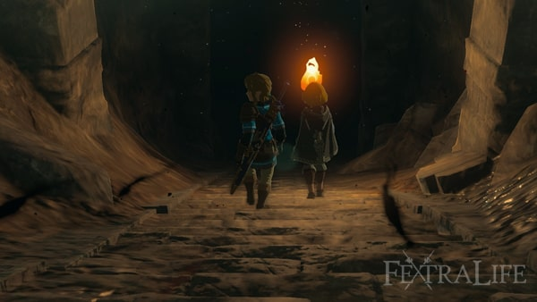

Hạ xong ba con dơi, Zelda soi đuốc xem bức phù điêu rồi hai người rẽ sang lối bên cạnh, đi vào một phòng giam cũ. Tại đây họ gặp xác ướp của Ganondorf. Đoạn phim tiếp theo: Ganondorf tỉnh dậy, bóp nát cánh tay phải của Link; thanh kiếm gãy, Zelda rơi xuống vực và mất tích.
Xem ảnh (1)
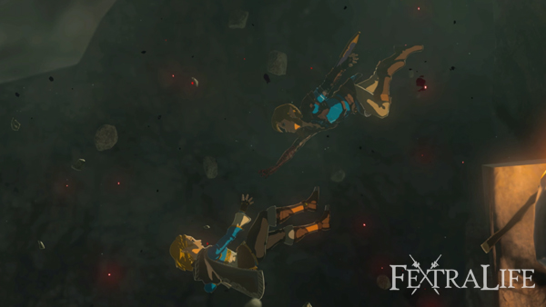
Link tỉnh dậy một mình trong hang, cánh tay đã được thay bằng cánh tay mới. Nhặt thanh kiếm gãy nằm ở góc hang trước lối ra, mở túi đồ bằng nút + để trang bị, rồi chém dây leo chặn đường bằng nút Y.
Xem ảnh (1)

Sang phòng kế, chạm viên đá xanh để mở cửa phía trước. Cứ đi thẳng rồi nhảy xuống hai hồ nước liên tiếp — trò chơi dạy bạn rằng nước giúp giảm sát thương khi rơi. Bên trái có rương đựng Quần Cổ Đại, mặc vào để tăng phòng thủ. Men theo ánh sáng cuối đường hầm, bạn nhận ra mình đang ở Đảo Trời.
Xem ảnh (3)


Great Sky Island – Room of Awakening (Đảo Trời – Phòng Thức Tỉnh)
Sau màn giới thiệu, bạn có cái nhìn đầu tiên về Đảo Trời và rơi tự động xuống nước. Cứ bơi thẳng về phía cầu thang đá, hướng có con rồng đang bay. Nhặt Cành Cây làm vũ khí, bấm nút ▶ rồi xoay cần phải để chọn vũ khí trong túi đồ. Đi tiếp tới cây gần đó, hái ít nhất 3 quả Táo.
Xem ảnh (1)

Trên đường bạn gặp Soldier Construct — kẻ địch đầu tiên của game. Đánh nó bằng Cành Cây, cây gãy thì nhặt cây khác, máu thấp thì ăn Táo. Nhớ nhặt chiến lợi phẩm: Construct thường rơi 1 Sừng Construct và 1 Pin Zonai. Quanh khu này có thêm Cành Cây, trong một túp lều có 1 Gậy Gỗ, và đi ngược lại theo lối đá sẽ thấy phế tích có thêm 1 Gậy Gỗ nữa.
Xem ảnh (1)
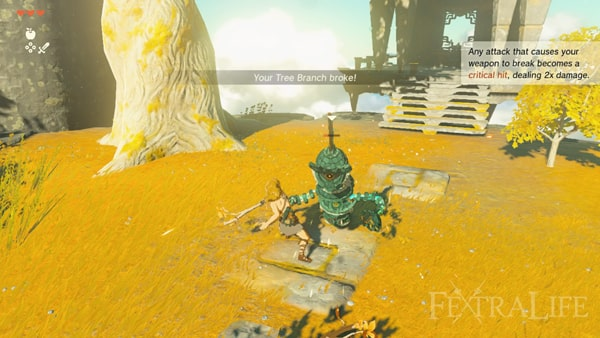
Cứ men theo con rồng đang bay cho tới khi gặp cây cầu đá gãy, bên trái có một khối kim loại xanh. Đó là Steward Construct, robot thân thiện chuyên đưa gợi ý. Ông ta cho biết Zelda đã để lại Purah Pad cho Link — thiết bị mở bản đồ thế giới khi bấm nút -.
Đây cũng là lúc nhiệm vụ chính Find Princess Zelda bắt đầu. Mở Nhật Ký Phiêu Lưu bằng nút - để thấy điểm đánh dấu màu vàng ở phía bắc, hướng tới Đền Thờ Thời Gian. Lúc này bạn chưa có Dù Lượn, muốn xuống thấp thì phải nhảy xuống nước hoặc men theo vách đá.
Xem ảnh (3)


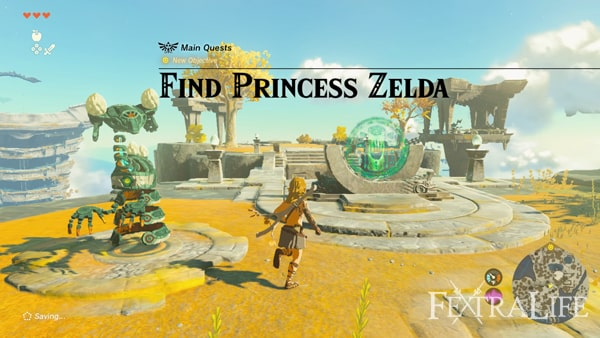
Reach the Temple of Time (Đến Đền Thờ Thời Gian)
Nhiệm vụ lúc này là tìm công chúa Zelda, và Steward Construct chỉ bạn tới Đền Thờ Thời Gian. Chạm viên đá xanh để hạ cây cầu và đi qua. Qua cầu sẽ gặp một Construct thân thiện cảnh báo về những con Construct hung hăng. Hái thêm ít nhất 3 quả Táo trên cây, quay lại mép đá rồi lao xuống hồ để xuống khu đất thấp hơn. Mục tiêu là tới Đền Thờ Thời Gian.
Xem ảnh (3)
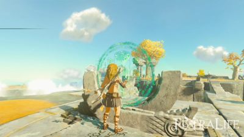
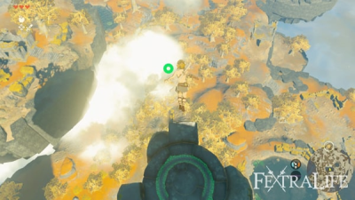
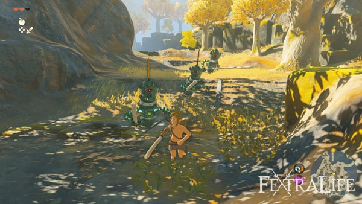
Bơi vào bờ, một Soldier Construct đứng gần đó — hạ nó lấy chiến lợi phẩm. Đi theo lối đá, lát nữa sẽ gặp 3 Soldier Construct canh đường. Đánh từng con một; Cành Cây rải rác quanh đó để thay khi gãy. Cứ canh lúc chúng ra đòn rồi phản công, hết máu thì ăn Táo — Táo mới mọc ngay gần đó.
Xem ảnh (3)

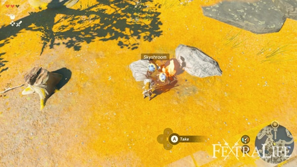
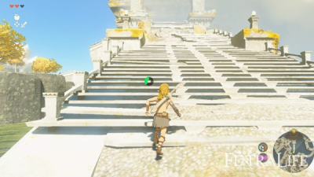
Đi tiếp bạn sẽ gặp Construct dạy nấu ăn. Nhặt Nấm Trời quanh đó, giữ rồi thả vào đống lửa để nấu. Nấu ăn rất có lợi vì làm tăng hiệu quả hồi máu hoặc buff của nguyên liệu. Cứ nấu hết những gì đang có, nhất là Táo và Nấm. Đây là cách nấu tạm thời, về sau bạn sẽ dùng Nồi Nấu đúng chuẩn.
Xem ảnh (1)

Bơi tới bậc thang đá của Đền Thờ Thời Gian, leo lên và hạ Soldier Construct canh cổng. Chạm vào cổng để mở đoạn phim: bạn gặp Rauru, ông cho biết sức mạnh hiện tại chưa đủ mở cánh cửa này. Muốn lấy lại năng lực đã mất, bạn phải tìm và hoàn thành cả ba đền thờ nhỏ trên Đảo Trời. Nhiệm vụ chính tiếp theo bắt đầu từ đây.
Xem ảnh (1)

Ukouh Shrine – Ultrahand (Đền Thờ Nhỏ Ukouh – Siêu Tay)
Nhiệm vụ The Closed Door mở ra: hoàn thành ba đền thờ nhỏ Gutanbac, In-Isa và Ukouh. Ukouh là đền gần nhất nên làm trước. Đi về phía Tây, nhảy xuống khu trũng và hạ Soldier Construct đang canh khu vực — đây là lần đầu bạn nhặt được Cung. Nhặt hết Nấm Trời và Mũi Tên quanh đó; Cung nên để dành cho mục tiêu bay, tình huống khẩn cấp hoặc giải đố, đừng dùng tràn lan trong giao chiến. Leo bậc thang đá, đánh úp Soldier Construct bên dưới để chiếm lợi thế, rồi nhặt vũ khí cận chiến — vũ khí trong game rất dễ gãy nên cứ tích trữ. Bơi qua hồ, tới bậc thang đá dẫn vào Đền Thờ Nhỏ Ukouh; dọc đường hái Nấm Rushroom. Tường đá quanh đây leo được nếu cần lên chỗ cao.
Xem ảnh (3)
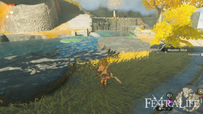

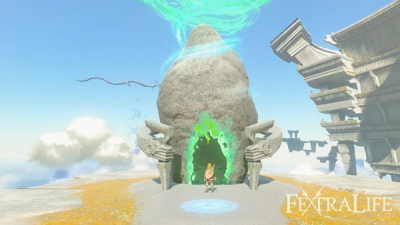
Đây là đền thờ nhỏ đầu tiên. Mục tiêu trong mỗi đền rất đơn giản: giải đố để đi tiếp, cuối cùng chạm bàn thờ nhận Ánh Sáng Chúc Phúc. Ba đền đầu đều dễ vì bạn vừa mở khóa năng lực mới. Rauru trao cho bạn Siêu Tay và bạn sẽ dùng nó xuyên suốt đền này; game hướng dẫn cách dùng, đọc kỹ rồi đi tiếp.
Xem ảnh (1)

Bài giải đố 1: dùng Siêu Tay nhấc tấm đá lát gần đó, đặt trước mặt làm cầu để sang bên kia. Mỗi lần giải xong một bài, bạn sẽ nghe một tiếng chuông vui tai.
Xem ảnh (3)

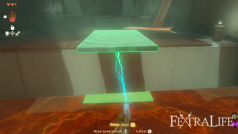

Bài giải đố 2: có hai tấm ván đá, ghép chúng lại thành cây cầu dài hơn để băng qua. Khi hai vật sắp dính vào nhau, giữa chúng sẽ hiện chất keo xanh — đó là dấu hiệu ghép được. Ghép xong thì căn thẳng và đi qua.
Xem ảnh (3)

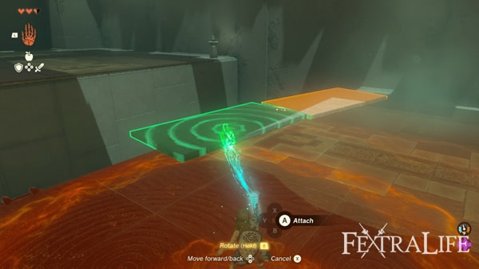

Bài giải đố 3: quan sát thanh kim loại chạy từ bệ bạn đứng sang bên kia. Bạn cần ghép cabin từ nguyên liệu quanh đó: lấy tấm ván gỗ và chiếc móc treo rồi ghép lại. Dùng Siêu Tay đặt cabin lên thanh kim loại, canh lúc nó trượt tới thì nhảy vào để sang bờ bên kia. Xong bài này thì chạm bàn thờ nhận Ánh Sáng Chúc Phúc; bạn được dịch chuyển về cửa đền.
Xem ảnh (4)


In-Isa Shrine – Fuse (Đền Thờ Nhỏ In-isa – Ghép)
Còn hai đền nữa, tiếp theo là In-Isa. Ngay trước cửa Đền Thờ Nhỏ Ukouh, Rauru dạy cách đánh dấu vị trí trên bản đồ bằng ống nhòm của Purah Pad. Từ đây có thể thấy cả hai đền còn lại. Gần chỗ bạn đứng có thanh kim loại chạy sang khu đảo kế tiếp — giống bài giải đố vừa rồi, bạn phải ghép cabin trượt để qua. Nhảy xuống hồ bên dưới, leo bậc thang lên, ghép cabin rồi đi.
Xem ảnh (4)


Sang khu đảo kế, một Construct thân thiện dạy cách chặt cây thành khúc gỗ để làm vật liệu xây dựng. Nhặt 1 Rìu Đá gần đó để thử chặt cây, lấy thêm 1 Khúc Gỗ trong phế tích. Ở đây bạn cần bắc cầu qua bên kia; cách nhanh nhất là ghép 4 khúc gỗ vào cabin vừa làm để thành cây cầu dài.
Xem ảnh (3)
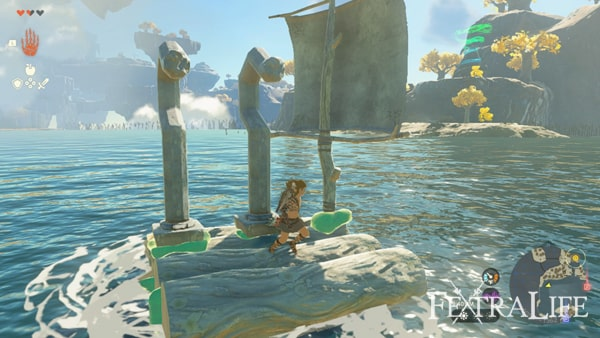

Khu tiếp theo có một bệ nổi bạn có thể đặt theo ý mình, rất tiện khi cần bước lên chỗ cao hoặc chỗ đứt quãng. Quay lại lối cũ, đi tiếp sẽ thấy đống lửa có Construct đứng cạnh — có thể dừng nấu ăn hoặc đi luôn. Trên đường tới đền kế tiếp, sau phế tích có Nồi Nấu dùng được; Construct ở đó dạy cách nấu ăn, món nấu giúp tăng máu và buff nên lúc nào cũng nên dự trữ.
Nấu xong thì đi tiếp, bạn sẽ gặp một tiền đồn có 3 Soldier Construct canh giữ. Xử lý hai con gần trước, con bắn cung sau; nhặt hết chiến lợi phẩm và mở rương lấy 1 Opal. Đi về phía Tây, lại có thanh kim loại để ghép cabin qua đảo kế.
Nếu thiếu khúc gỗ thì cứ chặt cây quanh đó. Qua được bờ bên kia, trên đảo có một cánh buồm — gắn vào cabin trước khi vượt thanh ray tiếp theo. Lát nữa sẽ có hồ nước rộng khó bơi qua; cabin gắn buồm lúc này phát huy tác dụng: thả xuống hồ làm bè. Sang bờ bên kia là tới cửa đền kế tiếp.
Rauru trao năng lực Ghép. Với Ghép, bạn gắn vũ khí với vật liệu quanh mình để đổi công dụng — thường là tăng tầm với, sát thương hoặc hiệu ứng. Đây là năng lực dùng liên tục, cả khi đánh nhau lẫn khi giải đố.
Xem ảnh (1)

Bài giải đố 1: đập vỡ bức tường đá chắn trước mặt. Cách làm là ghép vũ khí hoặc thanh Đại Kiếm Gỉ gần đó với tảng đá, tạo thành cây búa nặng đủ sức phá tường và các khối đá. Nhớ kỹ chiêu này vì về sau dùng rất nhiều.
Xem ảnh (1)

Bài giải đố 2: đập cột đá để hạ rương xuống, mở ra 5 Mũi Tên. Sang khu kế, hái hết Quả Lửa ở đây — game sẽ dạy cách ghép nguyên liệu vào mũi tên trước khi bắn. Mục tiêu là đốt giàn dây leo dưới bệ đặt rương: ngắm vào dây leo, ghép 1 Quả Lửa vào mũi tên rồi bắn. Rương rơi xuống, lấy 1 Chìa Khóa Nhỏ và mở cánh cửa phía trước.
Xem ảnh (1)

Bài giải đố 3: qua thang, một Captain Construct I đang đợi — con này đánh khá đau. Để giảm rủi ro, dùng cung bắn mũi tên ghép Quả Lửa để đốt giàn dây leo trên sàn, lửa sẽ gặm máu nó theo thời gian. Cháy hết mà nó còn sống thì dứt điểm. Sau đó dùng vũ khí ghép đá đập vỡ tường chắn để hoàn thành đền, nhận 1 Ánh Sáng Chúc Phúc.
Xem ảnh (1)

Gutanbac Shrine – Ascend (Đền Thờ Nhỏ Gutanbac – Xuyên)
Đền cuối cùng. Sau khi được dịch chuyển về cửa đền, Steward Construct đưa bạn 1 Pin Năng Lượng và giải thích công dụng — đây là pin của các Thiết Bị Zonai. Ông ta cũng chỉ bạn vào một hang ở phía Đông Nam.
Xem ảnh (1)

Trên đường tới hang, bạn sẽ gặp một trận hỗn chiến giữa 2 Chuchu và 2 Soldier Construct. Nhảy vào đánh úp để chiếm lợi thế. Xong trận thì tới cửa hang có 2 Soldier Construct canh gác; hạ chúng rồi mở rương cạnh Nồi Nấu để lấy 1 Lưỡi Hái Của Lính. Tranh thủ nấu và bổ sung lương thực trước khi vào hang.
Trong Hang Pondside khá đơn giản, chỉ có vài con quái nhỏ như Keese. Đáng chú ý là Ếch Bubbul — bắn nó rơi xuống rồi dứt điểm để nhận Ngọc Bubbul. Đây là quái hiếm, gặp là hạ ngay nếu muốn sưu tầm Ngọc Bubbul về sau.
Xem ảnh (1)

Dùng Ghép phá tường đá, rồi đập các trụ tinh thể để lấy đá quý: Muối Đá, Hồng Ngọc, Đá Lửa và Hổ Phách. Đá Lửa rất hữu ích vì có thể tạo lửa cùng Khúc Gỗ khi chưa có Nồi Nấu di động. Đi vào sâu hơn, bạn tìm được 1 Áo Cổ Đại — mặc vào để tăng chỉ số. Ra khỏi hang, quanh đó có rất nhiều nguyên liệu.
Xem ảnh (1)

Muốn qua sông, bạn phải đóng bè từ nguyên liệu sẵn có; hai Construct thân thiện quanh đây sẽ gợi ý. Ghép bè với 3 Khúc Gỗ và 2 Cánh Quạt, thả xuống nước rồi đánh vào quạt để bè chạy. Muốn dừng thì đánh lần nữa. Gần bờ, một Steward Construct chỉ cách tạo lửa bằng Đá Lửa và Khúc Gỗ — nấu ăn ở đây cũng được. Đi theo bậc thang đá, dọc đường xử lý Chuchu.
Xem ảnh (1)

Gần cửa hang có một tiền đồn với 2 Soldier Construct và 1 Captain Construct. Ghép vật liệu quanh đó vào vũ khí để đánh hiệu quả hơn. Dọn xong ba con thì mở rương nhận 1 Opal. Sát cửa hang, gắn 1 Cánh Quạt vào xe goòng khai thác rồi cho nó chạy để vào trong.
Vào trong, game dạy dùng Hạt Sáng: chúng phát sáng khi va vào vật, có thể ghép vào mũi tên hoặc thả xuống đất rồi đánh — rất tiện trong hang tối. Nhớ đập các trụ tinh thể để lấy Pin Zonai. Khu tiếp theo, Construct cạnh xưởng luyện giải thích Pin Zonai và Tinh Chất Kết Tinh: Pin Zonai nạp lại Pin Năng Lượng, còn Tinh Chất Kết Tinh dùng để chế thêm Pin Năng Lượng. Lúc này chưa cần chế, cứ đập trụ và nhặt nguyên liệu rồi đi tiếp. Gần cửa hang có một Construct đang đợi.
Xem ảnh (1)

Nói chuyện với Construct đó, bạn nhận được các Capsule Zonai. Mở túi đồ, lấy ít nhất 1 Capsule Quạt rồi gắn vào xe goòng để đi tiếp. Đây là cách game giới thiệu Capsule: bạn mang theo Thiết Bị Zonai dưới dạng viên nang, cần thì mở ra dùng.
Xem ảnh (1)

Tới cuối đường ray, xuống xe và để ý cấu trúc hình viên nang — đó là Máy Phân Phát Zonai, nơi đổi Capsule. Mỗi Capsule cần 1 Sừng Construct; cứ đổi 5 sừng lấy 5 capsule, phần còn lại để dành. Máy phân phát có khắp thế giới và mỗi máy cho một loại capsule khác nhau. Bên kia máy là hang tiếp theo.
Xem ảnh (1)

Hang này khá đơn giản, mục đích chính là chuẩn bị cho vùng tuyết ngay sau cửa hang. Nhặt 2 quả Ớt Cay gần cửa rồi bỏ vào Nồi Nấu để làm món Ớt Cay Xào. Món này tăng kháng lạnh 2:30; cho 2 quả Ớt vào nồi thì được khoảng 5:00. Gần đó có tường đá cần phá để lấy đá quý, và quanh cửa hang còn thêm Ớt Cay — nhớ chỗ này để quay lại hái khi cần.
Xem ảnh (1)

Ra khỏi hang là vùng tuyết. Ăn Ớt Cay Xào đã chuẩn bị để tăng kháng lạnh, vì lạnh quá Link sẽ mất máu liên tục. Đi về phía bắc, gặp một Ice Chuchu — bắn nó từ xa vì nó nổ khi chết. Quanh đó có 2 Soldier Construct, có thể đánh úp từ trên cao.
Xem ảnh (1)

Nếu cần thêm Ớt Cay Xào thì quay lại dùng Nồi Nấu. Đi tiếp về phía bắc sẽ gặp thêm Ice Chuchu, hạ và nhặt chiến lợi phẩm. Trên đường, một Captain Construct I đang đánh nhau với một Ice Chuchu ngay gần cửa hang — dồn sát thương vào Captain và hết sức cẩn thận vì đòn lửa của nó có thể hạ Link rất nhanh. Cần thì dùng cung. Xong thì vào hang.
Xem ảnh (2)


Gần cửa Hang Không Đáy có một Ếch Bubbul, hạ để lấy Ngọc Bubbul. Nhớ nhặt 2 Hoa Bom và để dành cho trận boss về sau. Lên phần trên, nhặt thêm 1 Hoa Bom và mở rương cuối cầu đá nhận 1 Hổ Phách. Quay lại khu trên của hang, bạn sẽ gặp Like-Like.
Xem ảnh (1)

Muốn hạ Like-Like, cứ chờ trước khi nó ra đòn — nó sẽ lộ điểm yếu là túi màu cam giữa miệng. Đánh trúng đó để nó choáng rồi dồn sát thương. Hạ xong nhận 1 Opal. Đi tiếp và nhớ nhặt nguyên liệu quanh đó như Hoa Bom, Hạt Sáng.
Xem ảnh (1)

Gần cửa hang còn một Like-Like nữa; hạ nó nhận thêm 1 Opal và mở rương phía sau lấy 1 Capsule Vòi Lửa.
Xem ảnh (1)

Từ cửa hang rẽ trái, đền thờ nhỏ không còn xa — nó nằm ngay phía trên cửa hang, bạn sẽ thấy trên bản đồ nhỏ nếu đã đánh dấu trước đó. Để lên tới nơi, chặt cây quanh đó làm trụ gỗ để leo, vì Link chưa leo được bề mặt băng nếu không có giáp đặc biệt. Quanh đây có phế tích kèm Nồi Nấu, cần thì lấy Đá Lửa nhóm lửa nấu thêm đồ. Xong thì vào đền cuối.
Trong Đền Thờ Nhỏ Gutanbac, Rauru trao năng lực Xuyên. Đây là năng lực rất hữu ích khi cần lên chỗ cao: Link xuyên qua trần nhà để lên trên nếu khoảng cách hợp lý. Đền này là nơi luyện Xuyên hoàn hảo.
Xem ảnh (2)


Bài giải đố 1: dùng Xuyên, ngắm lên trần. Chỉ cần nhìn dấu ngắm chuyển màu xanh là biết xuyên được.
Xem ảnh (1)

Bài giải đố 2: Xuyên lên cột có rương trước, nhận 1 Rìu Đá. Nhảy xuống, Xuyên tiếp lên cột kế bên. Trong đó có một Soldier Construct — hạ nó rồi đi tiếp. Gần chỗ con Construct có mấy thùng gỗ, đập vỡ để Xuyên lên lấy rương phía trên: 1 Cung Construct. Nhảy xuống và đi tiếp.
Xem ảnh (1)

Bài giải đố 3: có một tấm đá cần được thả lỏng và vào đúng vị trí. Cắt dây buộc tấm đá rồi Xuyên từ dưới lên. Tiếp đó, canh đúng lúc bệ di động trên đầu bạn trượt tới để Xuyên, và làm tương tự với cây cột dài. Vậy là xong bài thứ ba.
Xem ảnh (1)

Return to Temple of Time & Nachoyah Shrine (Quay lại Đền Thờ Thời Gian và Đền Thờ Nhỏ Nachoyah)
Chúc mừng, bạn đã tìm và hoàn thành cả ba đền thờ nhỏ. Chạm bàn thờ nhận 1 Ánh Sáng Chúc Phúc, sau đó bạn được dịch chuyển về cửa đền và Rauru bảo quay lại Đền Thờ Thời Gian. Muốn đi thì dùng Xuyên lên khu vực cao gần cửa Hang Gutanbac.
Xem ảnh (1)

Vào trong thân cây, mở rương lấy Ống Chân Sưởi Cổ Đại. Khu kế bên có rất nhiều Cánh Zonai — loại phương tiện hình chim để cưỡi và lượn. Quanh đó cũng có Máy Phân Phát Zonai, dùng Xuyên để lên tới nếu cần.
Xem ảnh (1)

Khi sẵn sàng đi tiếp, dùng Siêu Tay đặt một Cánh xuống cuối đường bệ phóng; nó sẽ tự trượt đi. Canh lúc cánh lao tới thì nhảy lên và tận hưởng chuyến bay ngắm cảnh. Lượn qua Đền Thờ Thời Gian rồi lao xuống hồ gần đền.
Xem ảnh (1)

Leo lên đền lần nữa, chạm vào cánh cửa để mở — nhiệm vụ chính The Closed Door hoàn thành. Vào trong, chạm viên pha lê phát sáng để xem đoạn phim với công chúa Zelda; phần thưởng là năng lực Hồi Tưởng. Nhiệm vụ Find Princess Zelda được cập nhật, mục tiêu mới là khám phá khu bên trong Đền Thờ Thời Gian.
Xem ảnh (1)

Ngôi đền này khá ngắn. Dùng Hồi Tưởng lên các bánh răng khổng lồ — năng lực này tua ngược chuyển động của vật trong vài giây. Tua ngược bánh răng để nhảy lên và lên được tầng trên. Tới trụ giữa, tua ngược bánh răng trung tâm để sang khu tiếp theo.
Xem ảnh (1)

Tạm thời bỏ qua Tượng Nữ Thần, đi tới cánh cửa lớn phía sau và thử mở — bạn sẽ thấy mình chưa đủ sức. Cần thêm 1 Bình Máu, mà muốn đổi thì phải có tổng cộng 4 Ánh Sáng Chúc Phúc. Rauru khuyên tìm thêm một đền thờ nhỏ nữa; từ Đền Thờ Thời Gian có thể dịch chuyển nhanh tới đó.
Xem ảnh (1)

Mở bản đồ, dịch chuyển nhanh về Phòng Thức Tỉnh. Tại đây, dùng Xuyên lên khối đá gần bánh răng nhất, tua ngược bánh gần bạn rồi nhảy lên để sang bánh kế bên và tới một hang. Đi vào sâu trong hang sẽ thấy đền thờ nhỏ tiếp theo.
Xem ảnh (1)

Đền này khá dễ và là chỗ luyện Hồi Tưởng rất tốt, cứ thong thả mà chơi.
Bài giải đố 1: tua ngược chiếc bè đang di chuyển để nó chạy ngược chiều, nhảy lên là xong.
Xem ảnh (1)

Bài giải đố 2: chiếc bè lần này trôi ra từ thác nước. Đứng gần chỗ mình sẽ đáp, chờ bè tới rồi tua ngược và nhảy lên; bè sẽ quay về vị trí cũ. Trên đường sang bài thứ ba có một bánh răng lớn, tua ngược để lên bệ trên lấy rương 10 Mũi Tên. Xong thì quay lại bài tiếp theo.
Xem ảnh (1)

Bài giải đố 3: nhìn hai kim đồng hồ — cửa sắt mở khi hai kim chạm nhau. Chú ý kim đang quay theo chiều kim đồng hồ, chờ hai kim chạm nhau rồi tua ngược để cả hai cùng quay theo chiều đó; cửa sẽ mở trong suốt thời gian tua.
Xem ảnh (2)


Vậy là xong đền này, bạn nhận Ánh Sáng Chúc Phúc thứ tư và được dịch chuyển về cửa đền. Gần đó có Xưởng Luyện Pha Lê, giờ chưa cần dùng. Ra ngoài sẽ thấy một bệ Cánh Zonai, dùng để lượn về Đền Thờ Thời Gian.
Xem ảnh (1)

Chuyến lượn lần này khá dài nhưng cảnh rất đáng. Đặt Cánh lên bệ phóng và nhảy lên. Trong lúc bay, canh đúng thời điểm để lao xuống hồ của Đền Thờ Thời Gian.
Tiếp đất xong, quay lại Tượng Nữ Thần trong đền và dâng 4 Ánh Sáng Chúc Phúc để nhận thêm 1 Bình Máu. Sau đó chạm cánh cửa — lần này đã mở được. Một đoạn phim với Rauru diễn ra; xong thì đi theo điểm đánh dấu nhiệm vụ, dùng Xuyên để qua bên kia cầu. Tới cuối đường sẽ có đoạn phim cuối: Zelda dẫn Link lên mặt đất. Chúc mừng bạn đã hoàn thành Đảo Trời — phần tiếp theo là khám phá mặt đất Hyrule.
Xem ảnh (1)

Mẹo: trước khi lên vùng tuyết, nấu sẵn món Ớt Cay Xào; tiết kiệm Pin Zonai; mang Hạt Sáng khi vào hang tối; nhặt thêm vũ khí cận chiến vì chúng rất dễ gãy; dùng Xuyên để đi tắt lên các mốc cao.
Prologue & Đảo Trời: 19/19 bước trong index đã có walkthrough chi tiết, ảnh xếp đúng thứ tự từng bước.